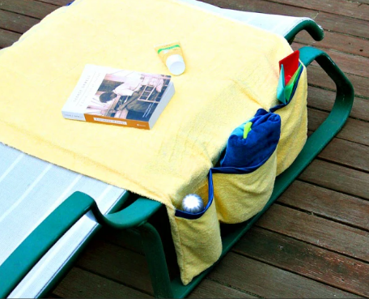
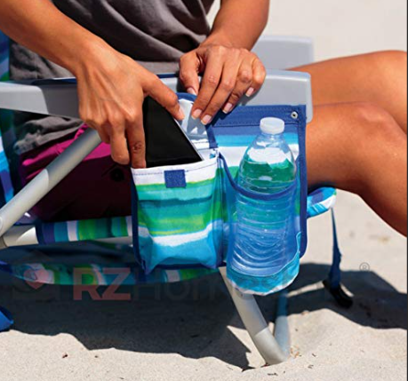
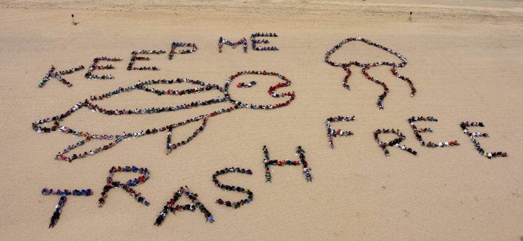

Travel Tips
-
Best time to visit: November to April
The best time to visit Panacalan Island Sandbar is from November to April. During these months, the weather is typically clear, with calm seas and pleasant breezes. This period falls within the dry season, offering ideal conditions for beach activities, swimming, and enjoying the sandbar's stunning natural beauty.
-
Bring sunscreen and swim gear
Don't forget to bring sunscreen and swim gear when visiting Panacalan Island Sandbar. The sun can be intense, especially during peak hours, so sunscreen will protect your skin as you soak up the tropical warmth. With crystal-clear waters surrounding the sandbar, swim gear is essential for exploring the vibrant marine life and refreshing yourself in the gentle waves.
 -
Stay hydrated and bring snacks
Remember to stay hydrated and bring snacks for your visit to Panacalan Island Sandbar. The tropical heat can be dehydrating, so having plenty of water is essential for staying refreshed. Bringing some snacks will keep your energy up, allowing you to enjoy a full day of beach activities, from sunbathing to exploring the sandbar’s scenic surroundings.
 -
Respect local wildlife and environment
Respecting the local wildlife and environment is key when visiting Panacalan Island Sandbar. This pristine spot is home to unique marine life and delicate ecosystems, so be mindful of your impact. Avoid disturbing animals, don’t leave any trash behind, and try to minimize your footprint to help preserve the natural beauty of the sandbar for future visitors.
 -
Check local weather conditions before your trip
Before heading to Panacalan Island Sandbar, be sure to check local weather conditions. Weather can change quickly in coastal areas, and being prepared ensures a safe and enjoyable trip. Knowing the forecast will help you plan the best times for beach activities and make the most of your visit to this beautiful sandbar.